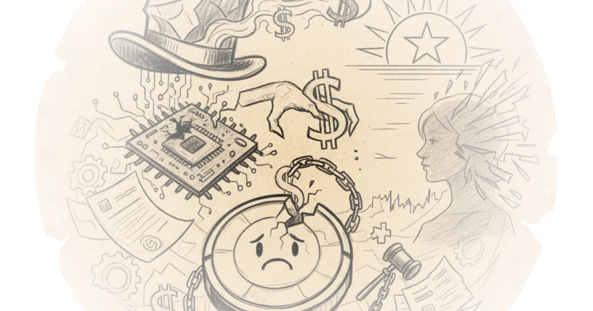

Matt Stoller delivers a stinging indictment of how financial engineering hollowed out a genuine American innovator, only to blame antitrust regulators for the resulting collapse. The piece's most arresting claim is that iRobot's bankruptcy wasn't a failure of competition policy, but the inevitable conclusion of a decade-long campaign by Wall Street to strip the company of its R&D and offshoring its production, leaving it defenseless against foreign rivals. This narrative reframes the recent bankruptcy from a tragedy of regulation into a case study of corporate predation, forcing listeners to reconsider who actually benefits from the current model of shareholder capitalism.
The Real Culprit: Financial Engineering
Stoller begins by dismantling the convenient narrative pushed by iRobot's own co-founder, Colin Angle, and former Obama economist Jason Furman. They argue that blocking Amazon's acquisition doomed the company. Stoller, however, traces the rot back to the mid-2010s, long before the merger talks began. He writes, "In the mid-2010s, during Furman’s tenure running economic policy under Obama, the company sold its defense business, offshored production, and slashed research, a result of pressure from financiers on Wall Street."

The author highlights a pivotal moment when Willem Mesdag, a hedge fund manager, waged a proxy fight to seize control from the engineering founders. Mesdag demanded the company abandon its broader robotics ambitions to focus solely on vacuum cleaners, arguing that research was a misuse of capital. Stoller notes that this pressure forced iRobot to abandon its legacy as a defense contractor. The company had once built the PackBot, a robot used to clear mines in Iraq and Afghanistan, and had received grants from the Defense Advanced Research Projects Agency (DARPA) to develop advanced AI. As Stoller points out, DARPA is the same agency that financed the creation of the internet and GPS, yet iRobot was forced to sell its defense unit to satisfy short-term stock demands.
"In my trips to Wall Street... one of my analyst friends took me to lunch one day and said, 'Joe, you have to get iRobot out of the defense business. It's killing your stock price.' And I countered by saying 'Well, what about the importance of DARPA and leading-edge technology? What about the stability that sometimes comes from the defense industry? What about patriotism?' And his response was, 'Joe, what is it about capitalism you don't understand?'"
This anecdote serves as the emotional core of the piece, illustrating the clash between national strategic interests and the relentless drive for quarterly returns. The argument is compelling because it exposes a systemic issue: the American model of "asset-light" capitalism encourages firms to harvest value from existing monopolies rather than invest in the heavy engineering required to maintain technological leadership. Critics might argue that Wall Street simply responded to market signals, but Stoller effectively counters that these signals were distorted by a governance structure that prioritizes buybacks over innovation.
The Amazon Illusion
The commentary then shifts to the proposed Amazon acquisition, which many defenders claim would have saved iRobot. Stoller challenges this, suggesting the deal was less about saving a robot vacuum maker and more about Amazon securing a massive data network. He details Amazon's strategy of building "Sidewalk," a proprietary low-bandwidth network that would link millions of devices, from Ring cameras to Eero routers, into a surveillance-heavy ecosystem.
Stoller writes, "Amazon wanted Ring for Iotera, a company Ring acquired in late 2017. Iotera built a proprietary protocol for smart devices. Internally, it was known as RingNet, but now it is known as Amazon Sidewalk. Unlike Wifi, Bluetooth, Zigbee, or Z-Wave, Sidewalk requires users to use the Alexa ecosystem."
The author argues that the Federal Trade Commission (FTC) and European regulators were right to scrutinize the deal. The concern wasn't just about market share in vacuums, but about creating a closed loop where Amazon could self-preference its products and harvest intimate data from American homes. Stoller notes that Ring had already faced accusations of allowing employees to view private videos of users in their bedrooms and bathrooms. By acquiring iRobot, Amazon would have gained control over the mapping data of millions of homes, further cementing its dominance in the Internet of Things.
"The Commission's probe focused on Amazon's ability and incentive to favor its own products and disfavor rivals', and associated effects on innovation, entry barriers, and consumer privacy. The Commission's investigation revealed significant concerns about the transaction's potential competitive effects."
Stoller's framing here is crucial: the deal's collapse didn't kill iRobot; it merely delayed the inevitable. The company was already structurally weakened by years of underinvestment. Had the merger gone through, Stoller argues, manufacturing would likely have remained in China, and the data would still have been harvested, just by a different American giant. The narrative that antitrust enforcement caused the bankruptcy ignores the reality that iRobot had already been stripped of the assets necessary to compete.
The National Security Blind Spot
The piece concludes by connecting iRobot's fate to a broader pattern of American industrial decline. Stoller contrasts the U.S. approach with China's, noting that while American financiers suppress returns on capital to maximize stock prices, the Chinese government forces an "asset-heavy" approach that prioritizes factories and engineering. This dynamic has allowed China to capture leadership in robotics, batteries, and rare earths.
As Stoller puts it, "China has captured technology and key process leadership from American and European firms, across everything from rare earths to batteries to chemicals to robotics. And the driver is that the American model of running corporations is to focus on 'asset light' cream-skimming, which is to say, focusing on lines of business where the return on capital is exceptionally high."
The author warns that the bankruptcy of iRobot means that the data from 20 million active Roombas will now flow to a Chinese manufacturer, Shenzhen Picea Robotics. This is a stark national security failure, yet it is being blamed on the wrong actors. Stoller writes, "Unless Trump regulators or antitrust enforcers act, now all the data harvested from our homes will go to China," though the commentary reframes this to focus on the executive branch's failure to enforce antitrust laws that would have protected domestic industry from being sold off. The administration's hesitation to challenge the merger, or the lack of a robust industrial policy to support firms like iRobot, is the true failure.
"What is it about capitalism you don't understand?"
This recurring question from the Wall Street analyst serves as a chilling summary of the mindset that led to this outcome. It suggests a fundamental disconnect between the logic of finance and the needs of a nation's technological sovereignty. The piece forces the listener to confront the uncomfortable truth that the current financial system is actively dismantling the very capabilities it claims to protect.
Bottom Line
Matt Stoller's argument is a powerful corrective to the prevailing narrative that antitrust enforcement stifles innovation; instead, he demonstrates how financialization has already done the damage, leaving companies vulnerable to foreign acquisition. The piece's greatest strength is its historical grounding, tracing the decline of iRobot from a DARPA-funded defense innovator to a hollowed-out brand, but it leaves the reader with a lingering question: can the regulatory state ever catch up to the speed of financial predation? The verdict is clear: blaming regulators for the collapse of iRobot is a distraction from the real crisis of American industrial policy.